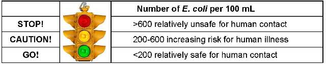
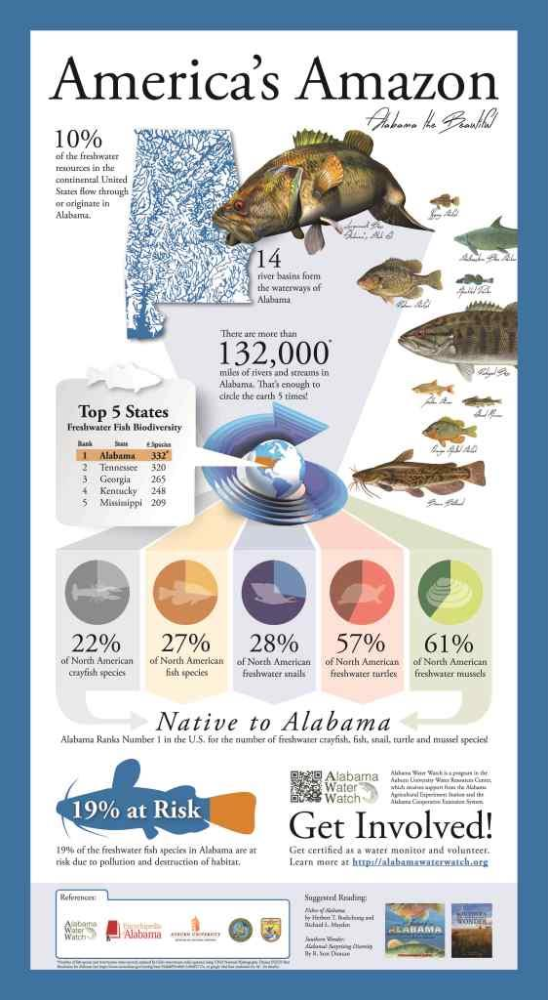
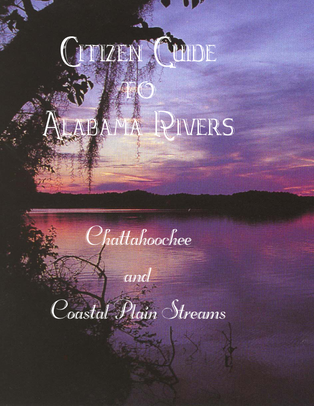
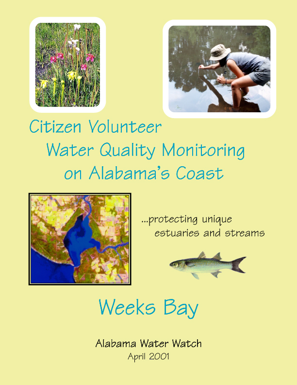
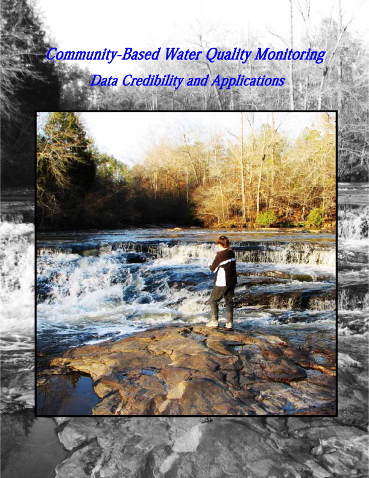
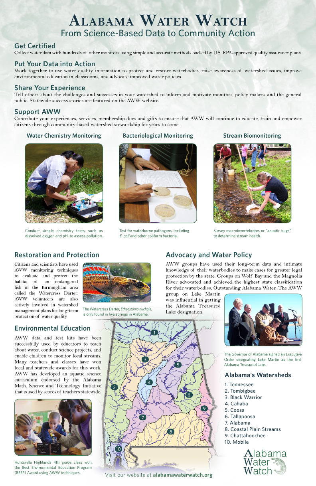
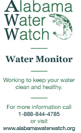
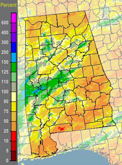

Resources
- Frequently Asked Questions
- Publications
- Videos
- Forms
- Helpful Links
- State Drought Monitor
- Listserve
Frequently Asked Questions
This is an archive of frequently asked questions that AWW encounters.
-
General FAQs
General FAQs
What are the different Alabama Water Use Classifications?
There are currently 7 major Water Use Classifications in Alabama:
(1) OUTSTANDING ALABAMA WATER
(a) Best usage of waters: activities consistent with the natural characteristics of the waters.
(b) Conditions related to best usage:
1. High quality waters that constitute an outstanding Alabama resource, such as waters of state parks and wildlife refuges and waters of exceptional recreational or ecological significance, may be considered for classification as an Outstanding Alabama Water (OAW).(2) PUBLIC WATER SUPPLY
(a) Best usage of waters: source of water supply for drinking or food-processing purposes.
(b) Conditions related to best usage: the waters, if subjected to treatment approved by the Department equal to coagulation, sedimentation, filtration and disinfection, with additional treatment if necessary to remove naturally present impurities, and which meet the requirements of the Department, will be considered safe for drinking or food-processing purposes.
(c) Other usage of waters: it is recognized that the waters may be used for incidental water contact and recreation during June through September, except that water contact is strongly discouraged in the vicinity of discharges or other conditions beyond the control of the Department or the Alabama Department of Public Health.(3) SWIMMING AND OTHER WHOLE BODY WATER-CONTACT SPORTS
(a) Best usage of waters: swimming and other whole body water-contact sports.
(b) Conditions related to best usage: the waters, under proper sanitary supervision by the controlling health authorities, will meet accepted standards of water quality for outdoor swimming places and will be considered satisfactory for swimming and other whole body water-contact sports. The quality of waters will also be suitable for the propagation of fish, wildlife and aquatic life. The quality of salt waters and estuarine waters to which this classification is assigned will be suitable for the propagation and harvesting of shrimp and crabs.(4) SHELLFISH HARVESTING
(a) Best usage of waters: propagation and harvesting of shellfish for sale or use as a food product.
(b) Conditions related to best usage: waters will meet the sanitary and bacteriological standards included in the National Shellfish Sanitation Program Model Ordinance, 1999, Chapter IV, published by the Food and Drug Administration, U.S. Department of Health and Human Services and the requirements of the State Department of Public Health. The waters will also be of a quality suitable for the propagation of fish and other aquatic life, including shrimp and crabs.
(c) Other usage of waters: it is recognized that the waters may be used for incidental water contact and recreation during June through September, except that water contact is strongly discouraged in the vicinity of discharges or other conditions beyond the control of the Department or the Alabama Department of Public Health.
(d) Conditions related to other usage: the waters, under proper sanitary supervision by the controlling health authorities, will meet accepted standards of water quality for outdoor swimming places and will be considered satisfactory for swimming and other whole body water-contact sports.(5) FISH AND WILDLIFE
(a) Best usage of waters: fishing, propagation of fish, aquatic life, and wildlife, and any other usage except for swimming and water-contact sports or as a source of water supply for drinking or food-processing purposes.
(b) Conditions related to best usage: the waters will be suitable for fish, aquatic life and wildlife propagation. The quality of salt and estuarine waters to which this classification is assigned will also be suitable for the propagation of shrimp and crabs.
(c) Other usage of waters: it is recognized that the waters may be used for incidental water contact and recreation during June through September, except that water contact is strongly discouraged in the vicinity of discharges or other conditions beyond the control of the Department or the Alabama Department of Public Health.
(d) Conditions related to other usage: the waters, under proper sanitary supervision by the controlling health authorities, will meet accepted standards of water quality for outdoor swimming places and will be considered satisfactory for swimming and other whole body water-contact sports.(6) LIMITED WARMWATER FISHERY
(a) The provisions of the Fish and Wildlife water use classification at Rule 335-6-10-.09(5) shall apply to the Limited Warmwater Fishery water use classification, except as noted below. Unless alternative criteria for a given parameter are provided in paragraph (e) below, the applicable Fish and Wildlife criteria at paragraph 10-.09(5)(e) shall apply year-round. At the time the Department proposes to assign the Limited Warmwater Fishery classification to a specific waterbody, the Department may apply criteria from other classifications within this chapter if necessary to protect a documented, legitimate existing use.
(b) Best usage of waters (May through November): agricultural irrigation, livestock watering, industrial cooling and process water supplies, and any other usage, except fishing, bathing, recreational activities, including water-contact sports, or as a source of water supply for drinking or food-processing purposes.
(c) Conditions related to best usage (May through November):
1. The waters will be suitable for agricultural irrigation, livestock watering, and industrial cooling waters. The waters will be usable after special treatment, as may be needed under each particular circumstance, for industrial process water supplies. The waters will also be suitable for other uses for which waters of lower quality will be satisfactory.
2. This category includes watercourses in which natural flow is intermittent, or under certain conditions non-existent, and which may receive treated wastes from existing municipalities and industries. In such instances, recognition is given to the lack of opportunity for mixture of the treated wastes with the receiving stream for purposes of compliance. It is also understood in considering waters for this classification that urban runoff or natural conditions may impact any waters so classified.(7) AGRICULTURAL AND INDUSTRIAL WATER SUPPLY
(a) Best usage of waters: agricultural irrigation, livestock watering, industrial cooling and process water supplies, and any other usage, except fishing, bathing, recreational activities, including water-contact sports, or as a source of water supply for drinking or food-processing purposes.
(b) Conditions related to best usage:
(i) The waters, except for natural impurities which may be present therein, will be suitable for agricultural irrigation, livestock watering, industrial cooling waters, and fish survival. The waters will be usable after special treatment, as may be needed under each particular circumstance, for industrial process water supplies. The waters will also be suitable for other uses for which waters of lower quality will be satisfactory.
(ii) This category includes watercourses in which natural flow is intermittent and non-existent during droughts and which may, of necessity, receive treated wastes from existing municipalities and industries, both now and in the future. In such instances, recognition must be given to the lack of opportunity for mixture of the treated wastes with the receiving stream for purposes of compliance. It is also understood in considering waters for this classification that urban runoff or natural conditions may impact any waters so classified. -
Water Chemistry Monitoring
Water Chemistry Monitoring
Press here to watch Our Alabama Water Watch Instructional Videos
What is the difference between hardness and alkalinity?
Alkalinity (the concentration of carbonates and bicarbonates in water) is a measure of the buffering capacity of water to resist change in pH. If the buffer is good, either acid or a base in the water will be taken up, and the water will be neutralized, by the carbonates and bicarbonates. A common source of the carbonates and bicarbonates in Alabama surface water is limestone (calcium carbonate). When limestone dissolves in water, carbonate and bicarbonate ions are released. These ions can take up free hydrogen ions (contributors to acidity) in low pH environments, or release hydrogen ions in high pH environments, keeping things more stable for aquatic life.
A simple way to think of this is that alkalinity is like the “Rolaid of the stream.” If we get acid indigestion from spicy foods, a Rolaid can “absorb” acid (or base) and get our digestive system back to normal. In Alabama, alkalinity can be 100-200+ mg/L in the northern part of the state, where limestone outcrops are common, and it can be 0-20 mg/L in the coastal plain, where limestone is scarce and coastal wetlands can contribute enough organic acids to completely use up the buffer system.
Hardness comes from the other part of the calcium carbonate molecule…the calcium. Some rocks have magnesium carbonate, and the magnesium and calcium ions that are released when these rocks dissolve typically make up 90%+ of water hardness in Alabama surface waters. Hard water makes it difficult to get suds from soap, and people in hard-water areas (again, especially in north Alabama) often install water softeners to trap some of the calcium carbonate before it forms a white mineral scale in tea pots, pipes, water heaters, etc.
It’s easy to get confused about the difference between alkalinity and hardness because, in Alabama, they typically come from the same source rock. However, there are other parts of the country where there is a lot of sodium carbonate that results in soft, yet alkaline water; or where there is calcium sulfate that results in hard, yet poorly buffered water. It all goes back to the geology of the area that strongly influences natural water quality. Then, people get involved and what they do to their land and what they dump down the drain has other influences on water that are commonly called pollution.
Are high pH readings and hi dissolved oxygen readings associated with the algae bloom seen on the Little Tallapoosa Arm of Lake Wedowee (upper lake)?
Question:
Over the past week we've seen a pretty good size algae bloom of “worms” and when the wind or waves get going it just breaks up into a yucky green translucency. We’ve had the algae in the past and it was no big deal, but this year we are getting very high PH readings — around 9 to 9.5 — around the algae. Jack Duncan says he doesn’t remember algae and high PH numbers together, but we’re not absolutely sure chemical testing was done when the algae was at its peak. Is the high PH “normal” with the algae? Is it the algae or maybe the nutrients feeding the algae that raise the PH? Or should we be looking for something different? The DO numbers were up in the 11 and 12 range at 22 centigrade water temp.)Answer:
The algal 'noodles' sound the same as what y’all saw on the Little Tallapoosa a year ago. Seems to me that last year’s bloom was the first time that a serious bloom was seen. We’d love to see a live sample if someone could scoop up some noodles, put them in a Ziplock freezer bag (heavy duty) and Fedex them to AWW.The DO and pH shifts go hand-in-hand with algae blooms. We see these responses all the time in enriched catfish production ponds. When nutrients increase in non-flowing waters (ponds, lakes), algae populations increase greatly, the water becomes murky-green (depending on the species – may have floating mats or other forms), DO rises above ‘normal’ (pre-bloom) levels in the sunny afternoons (see attached equation), and afternoon pH levels increase – see equation again: note that CO2 dissolved in the water is converted to organic carbon (algae) and since dissolved CO2 is acidic (carbonic acid) when you effectively reduce its concentration, you make the water more basic (this is reversed at night, when only respiration occurs).
-
Bacteriological Monitoring
Bacteriological Monitoring
Press here to watch Our Alabama Water Watch Instructional Videos
What are AWW’s standards for safe and unsafe levels of E.coli in water?

AWW uses the red-yellow-green traffic light symbol to summarize relatively safe and unsafe levels of E.coli in water. The value of 200 E.coli/100mL level defining safe versus unsafe water corresponds closely with the EPA’s and ADEM’s criteria of 235 E.coli/100mL Statistical Threshold Value (based on a single sampling event).
Publications
AWW Infographic:

Citizen Guides to Alabama Rivers
Black Warrior and Cahaba
Alabama, Coosa and Tallapoosa
Chattahoochee and Coastal Plain Streams
Escatawpa, Mobile and Tombigbee
Tennessee

Waterbody Reports: Lakes, Streams, Bays
Weeks Bay
Dog River
Wolf Bay 2002
WolfBay 2008
Tri River Region
Locust Fork
Smith Lake
Smith Lake 2005
Lake Martin
Lake Martin 2012
Weiss Lake
Lake Wedowee
Lake Mitchell
Saugahatchee

Special Reports
Community-Based Water Monitoring – Data Credibility and Applications
funded by the World Wildlife Fund
Lake Martin Water Quality Study, 2009-2010
funded by Alabama Power Company
Sandy Creek Watershed Water Quality Study, 2010-2012
funded by the Middle Tallapoosa Clean Water Partnership

AWW Poster
AWW Brochure Poster
Alabama Water Watch
from science-based data to community action
(11″ x 17″)

EPA-Approved AWW Plans
Miscellaneous
Monitoring Sign
Place this sign in your car window or make a road side sign to educate people about what you are doing when you are testing water near a public roadway.
Monitor Card
These cards are similar to a business card. Distribute them to people who are interested in what you are doing with AWW.

Videos
Introduction to Alabama Water Watch

Alabama Water Watch Instructional Videos
These videos are intended to emphasize the most important steps and tips in our protocols clearly and succinctly, perfect for refreshing your skills or gaining a better understanding after attending one of our workshops!
Please see our YouTube Channel for all instructional videos.
Bacteria Testing: Determining Results

Bacteria Testing: Collecting Samples

Bacteria Testing: Plating Samples

Water Chemistry: Secchi Depth

Water Chemistry: Turbidity

Water Chemistry: Dissolved Oxygen (Part 2)

Water Chemistry: Dissolved Oxygen (Part 1)

Water Chemistry: pH

Water Chemistry: Alkalinity

Water Chemistry: Water Hardness

Water Chemistry: Air and Water Temperature

RR3

Alabama Water Watch Program Activities
Water chemistry monitor training, Smith Lake 2010

17th Annual Meeting/Picnic

Treasured Alabama Lake: Lake Watch of Lake Martin Impacts Statewide Water Policy
Governor Riley signs Treasured Alabama Lake executive order for Lake Martin

Watershed Projects
Cary Woods Elementary Outdoor Environment Project
Respect, Replace, and Restore

Environmental Stewardship at Cary Woods Elementary School – Part 1 of 4

Environmental Stewardship at Cary Woods Elementary School – Part 2 of 4

Environmental Stewardship at Cary Woods Elementary School – Part 3 of 4

Environmental Stewardship at Cary Woods Elementary School – Part 4 of 4

Unpaved Road Seminar at Auburn University
GSAs Marlon Cook presents Unpaved Road Seminar at Auburn University - Part 1 of 2

GSAs Marlon Cook presents Unpaved Road Seminar at Auburn University - Part 2 of 2

Forms
AWW Data Forms
AWW data forms are available here for download, just click on the form you need.
- Sampling Site Fill-in Form Link
- Chemistry Data Fill-in Form Link
- Bacteria Data Fill-in Form Link
- Stream Biomonitoring Data Form Link
- Emergency Response Form Link
Monitoring In Progress Sign
Place this sign in your car window or make a road side sign to educate people about what you are doing when you are testing water near a public roadway.
- Monitoring SignLink
These cards are similar to a business card. Distribute them to people who are interested in what you are doing with AWW.
- Monitor CardLink
Helpful Links
- Alabama Clean Water PartnershipLink
- Alabama Coastal FoundationLink
- Alabama Commission on Environmental InitiativesLink
- Alabama Cooperative Extension SystemLink
- Alabama Department of Conservation and Natural ResourcesLink
- Alabama Department of Economic and Community Affairs (ADECA)Link
- Alabama Department of Environmental ManagementLink
- Alabama Department of Public HealthLink
- Alabama Environmental CouncilLink
- Alabama Environmental Spectrum (AES)Link
- Alabama Grassroots ClearinghouseLink
- Alabama Natural Heritage ProgramLink
- Alabama Rivers AllianceLink
- Alabama Trails AssociationLink
- Alabama Wildlife FederationLink
- Alabama Wildlife Rehabilitation CenterLink
- American RiversLink
- Anniston Natural History MuseumLink
- Apalachicola Bay and RiverkeeperLink
- Auburn University Marine Extension Research CenterLink
- Bama Environmental NewsLink
- Beneficial Reuse Waste ExchangeLink
- Birmingham Audubon SocietyLink
- Black Warrior RiverkeeperLink
- Cahaba River PublishingLink
- Cahaba River SocietyLink
- Camp McDowell Environmental CenterLink
- Chattahoochee River BacteriAlertLink
- Choctawhatchee RiverkeeperLink
- Conservation Technology Information CenterLink
- Cyberways & WaterwaysLink
- Dauphin Island Sea LabLink
- Delaware Riverkeeper NetworkLink
- Desert Springs Action CommitteeLink
- Dog River Clearwater RevivalLink
- Dog River Watershed GeographyLink
- Earth 911Link
- Earth and Sky Radio SeriesLink
- Earth Day NetworkLink
- EarthForceLink
- EarthForce GREENLink
- EarthTrendsLink
- Earthwater StencilLink
- Environmental Awareness OrganizationLink
- Environmental Education Association of AlabamaLink
- Environmental Education LinkLink
- Environmental News NetworkLink
- Environmental Protection AgencyLink
- Flint River Conservation AssociationLink
- freedrinkingwater.comLink
- Friends of Chewacla Creek and the Uphapee WatershedLink
- Friends of Locust ForkLink
- Kentucky Water WatchLink
- Lake Mitchell Home Owner/Boat OwnerLink
- Lake Watch of Lake MartinLink
- Lay Lake Home Owner/Boat OwnerLink
- Legacy, Inc.Link
- Little River Canyon Field SchoolLink
- Logan Martin Lake Protection AssociationLink
- Lower Columbia River Estuary ProgramLink
- Name that BugLink
- NASA Goddard Space Flight CenterLink
- National Directory of Volunteer Monitoring ProgramsLink
- National Estuary ProgramLink
- National Forests in AlabamaLink
- Nationwide Rivers InventoryLink
- Nature Conservancy of Alabama
- Nonpoint Education for Municipal OfficialsLink
- Sand Mountain Concerned CitizensLink
- Save Our Environment Action CenterLink
- Save Our SaugahatcheeLink
- Save Our StreamsLink
- ScorecardLink
- Sierra ClubLink
- Smith Lake Environmental Preservation CommitteeLink
- Southern Environmental Center at Birmingham Southern CollegeLink
- SouthwingsLink
- State Government Sites LinkLink
- StreamNetLink
- Testing for Acid Mine DrainageLink
- Texas WatchLink
- The Society to Advance the Resources of Turkey CreekLink
- The Volunteer MonitorLink
- The Volunteer Monitor’s Guide to Quality Assurance Project PlansLink
- Trails.comLink
- Trash InfoLink
- U.S. Fish and Wildlife ServiceLink
- U.S. Geological SurveyLink
- Upper Chattahoochee RiverkeeperLink
- USDA NRCSLink
Alabama Climate Report
- View the Alabama Climate ReportLink

CoCoRaHS Network
Another great source for rainfall information in the state and across the nation is the Community Collaborative Rain, Hail and Snow Network (CoCoRaHS)
Alabama Drought Monitoring
Many Alabamians are aware of the increasing drought conditions in some parts of the state. AWW has been asked to cooperate in an effort to monitor these drought conditions.
If you are aware of drought impacts at your monitoring site or even other locations with which you are familiar, please report those conditions to either Lynn Sisk with ADEM or Pat O’Neil with GSA, as this is a statewide effort.
They are asking that if you are reporting anything to please include the following:
1. Stream name and road crossing
2. Drainage system
3. County
4. Impact of problem
5. If you have it: latitude and longitude
Please send this information to:
Listserve
The AWW Listserve is a totally free email service. You can subscribe, unsubscribe or resubscribe at any time (see below). The Listserve includes subscribers from all over Alabama and surrounding states to citizen monitors and those interested in keeping up with water quality issues. So far there are over 1500 subscribers to the AWW Listserve.
We try to have topics that apply to folks statewide (upcoming trainings, meetings, available grants, and/or water quality issues). Occasionally you will receive a message from groups that want to share as well as a few messages from the Alabama Water Watch Association, the non-profit arm of AWW. You are also welcome to send out a message to the listserve if it applies to water issues in Alabama and our shared watersheds of surrounding states.
Give the AWW Listserve a shot!
Instructions for subscribing, resubscribing or unsubscribing:
To subscribe for the first time or to resubscribe, send an email message to awwprog@auburn.edu.
Place the following command in the body of your email message: subscribe AWW listserve
To unsubscribe from the listserve, send an email message to awwprog@auburn.edu
Place the following command in the body of your email message: unsubscribe AWW listserve
Send all inquiries regarding the listserve to awwprog@auburn.edu or call the AWW Office, toll free, at 1-888-844-4785.